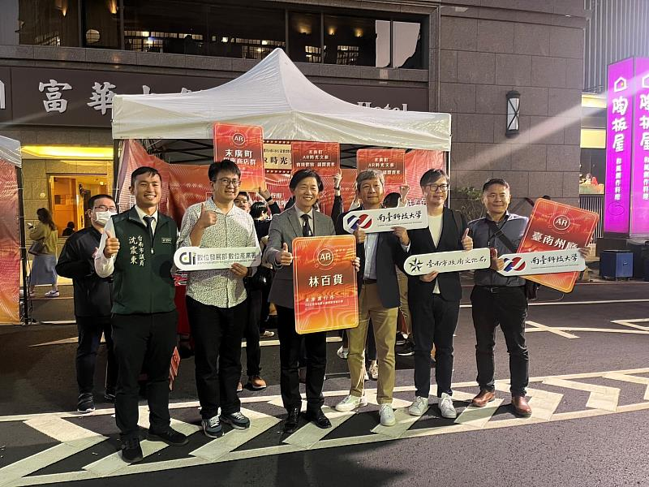
Personal Profile · Tainan
林士民
Lin Shih-Min — Cultural Technology Translator
讓文化被科技轉譯，
讓城市被世界看見。
- 臺南市文創協會 理事長
- 臺南市政府 青年委員
- 嘉義縣文化創新科技基地 顧問
- 嘉義縣文創產業發展計畫 顧問
- 臺南市天壇暨五條港商圈發展協會 總幹事
6項個人獎項與榮譽
12件文化科技導入專案
20項政府計畫主持／顧問
5檔展覽策畫
8處大學與機構講師
01 — HONOURS
個人獎項與榮譽
從社區營造、文創設計、媒體行銷到創業，橫跨十餘年的肯定，見證一位跨域整合者的成長軌跡。
115民國 115 年・2026
-
1062017入選
經濟部南台灣創新園區「STIR 創莘園」創業競賽 入選
經濟部南台灣創新園區創業種子徵選
-
1052016優勝
兩岸華人金媒獎 優勝
以「臺南七夕愛情嘉年華」獲 2016 兩岸華人金媒創新獎，傳播臺南傳統月老文化。
銘報：2016 兩岸華人金媒獎得獎感言—林士民 -
1052016優勝
兩岸三地青年文化創意設計競賽 優勝
文化創意設計專業獲兩岸三地評審肯定
-
1032014獲選
文化部 青年村落文化行動計畫
獲文化部支持，以青年行動深入村落推動文化
-
99–1012010–12楷模獎
信義房屋「社區一家」行動計畫 楷模獎
連續投入社區營造，獲全民社造行動計畫楷模肯定
信義房屋社區一家計畫
政府智庫實績
促成臺南市政府文化局成功爭取數位發展部 112–113 年「地方文化特色整合 5G 應用與落地計畫」補助，並擔任計畫總顧問。
臺南市青年事務委員會・委員簡介
02 — PROFILE
文科出身的
數位轉譯者
從社區大學、文化局、藝術經紀，到資策會人工智慧研究院——林士民以「非工程師」的人文背景，走進數位轉型最前線，把科技翻譯成地方聽得懂、用得上的語言。
「無論主修領域為何，都應具備『數位轉譯』的能力。」 — 林士民於國立臺南大學博雅教育講座〈科技可以讓改變更容易嗎？—數位時代的公民參與〉學歷 EDUCATION
真理大學 管理科學研究所 碩士
現職 CURRENT ROLES
- 臺南市文創協會理事長
- 臺南市政府青年委員
- 嘉義縣文化創新科技基地顧問
- 嘉義縣文創產業發展計畫顧問
- 臺南市天壇暨五條港商圈發展協會總幹事
01
數位轉型顧問服務
- 數位轉型策略規劃
- 數位人才教育與培訓
- 跨域整合諮詢與服務
- 計畫申請輔導
- 產業顧問服務
02
公共參與和推動
- 社區營造規劃與發展
- 社會福利推動
- 青年職涯發展與規劃
03
活動企劃與執行
- 媒體行銷與公關
- 異業結盟與合作
- 活動策劃與執行
04
專案管理與評估
- 政府標案／補助計畫規劃執行
- 相關專案規劃與執行
- 溝通協調
- 成本控制
05
文化創意產業推動
- 藝術經紀人（藝術授權）
- 展覽策展規劃
- 文化科技導入
- 文創產業行銷
03 — CULTURE × TECH
文化科技導入
執行經歷
2023–2025 年間，把 AR、AI、5G 與虛實共演帶進古蹟、博物館、燈節、劇場與傳統戲曲——12 件作品，串起臺南 400 的城市敘事。
左鎮化石園區／AI 辨識應用古生物互動娛樂應用與商模驗證導入
古生物 AI 互動留影屋，觸碰與手勢即可召喚史前生物。
自由時報報導臺南市立博物館／臺南 400 大展「我們從河而來」特展—川流之島擴增實境
以 AR 重現流域千年的川流之島。
展覽介紹隆田 chacha 文化資產教育園區—四鐵迴憶—AI 沉浸式劇場科技導入
生成式 AI 結合 5G，打造「臺南 500」未來隆田。
中央社訊息平台報導龍崎空山祭：霹靂布袋戲限定夜間山林展演科技導入
燈節 × 布袋戲，山林中的沉浸夜間展演。
臺南市政府新聞月津港燈節：漫月幻池塔科技展區／鹽水永成戲院、月之美術館數位科技體驗遊程科技導入
首度引進 5G 數位虛擬作品於鹽水歷史巷弄。
非池中藝術網臺灣文博會—臺南未來市元宇宙特展／321 巷藝術聚落
5G 與 XR 打造的臺南未來市元宇宙平台。
2024 臺灣文博會資訊臺灣設計展—臺南未來市展區／衛星展區—我住台南／321 巷藝術聚落
以科技重現家的溫度，用科技遇見新臺南。
中央社訊息平台報導南瀛國際民俗藝術節：臺南 400 大戲—風調雨順虛實共演科技導入
傳統科儀與虛擬影像同台，人神共戲。
自由藝文網報導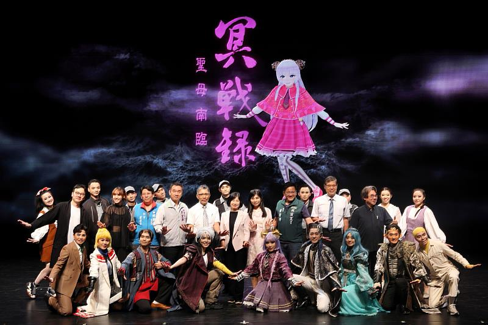
臺南百鳳凰文化祭／鳳凰召喚 AR 擴增實境體驗科技導入
AR 時光文旅 × 五條港導覽體驗。
活動頁面龍崎空山祭—數位互動科技展區規劃與執行
聲光、AI 與互動，山林地景中的科技藝術。
客新聞報導04 — PROJECTS
計畫申請與
執行實績
從數位部、經濟部、勞動部到臺南、高雄、嘉義地方政府——以計畫主持人、協同主持人與總顧問身分，橫跨十五年的公共計畫經驗。
近期計畫執行
- 115
- 114–115臺南市政府經濟發展局 臺南市產業數位轉型應用計畫
協同主持人 - 115
- 114
- 114臺南市政府經濟發展局 科技產業論壇暨趨勢產業策展委託專業服務案
顧問 - 114臺南市政府經濟發展局 臺南市商圈輔導行銷計畫
顧問 - 114
- 112–113高雄市政府 地方文化特色整合 5G 應用與落地計畫
顧問 - 112–113臺南市政府 地方文化特色整合 5G 應用與落地計畫
計畫總顧問
歷屆業界輔導及計畫
- 110–111
- 110–111臺南市政府社會局 我的空間，我作主—婦女及青少中心公共參與計畫
計畫主持人 - 111臺南市政府文化局 文創 1999 推廣計畫案
協同主持人 - 111臺南市政府研考會 提升青年公共參與服務計畫勞務委外案
協同主持人 - 109經濟部中小企業處 推動中小企業城鄉創生輔導計畫「鹽之遊程—鹽水伴手禮行銷與觀光加值計畫」
輔導顧問 - 108台南生活美學館「藝術市集行銷推廣計畫」
協同主持人 - 106–107
- 108–109國家文化記憶庫—臺南覓老店文化資源調查建置計畫
計畫專員 - 104
- 103彩虹爺爺創作圖像數位典藏暨文創商品研發計畫
計畫主持人 - 101–102臺南市名人故居調查與發展計畫
專案執行
05 — GALLERY
活動照片牆
從講堂、古蹟到山林燈節——點擊照片放大，並可連到原始報導看活動詳情。
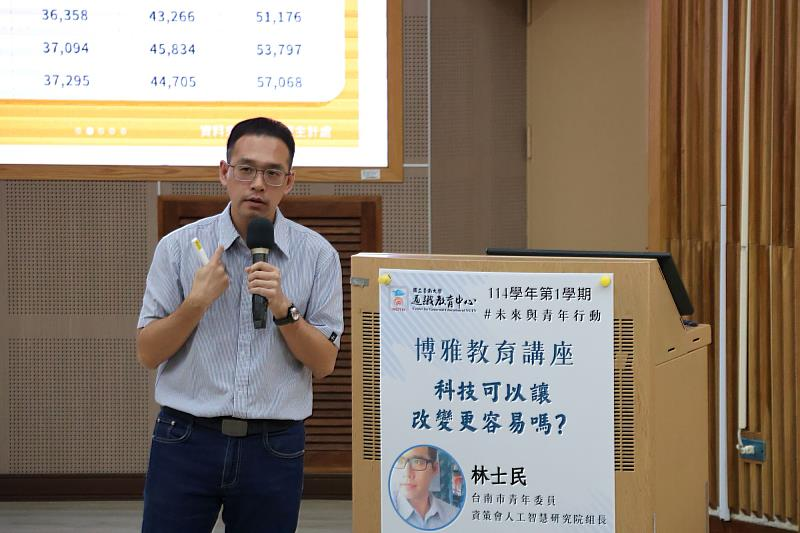
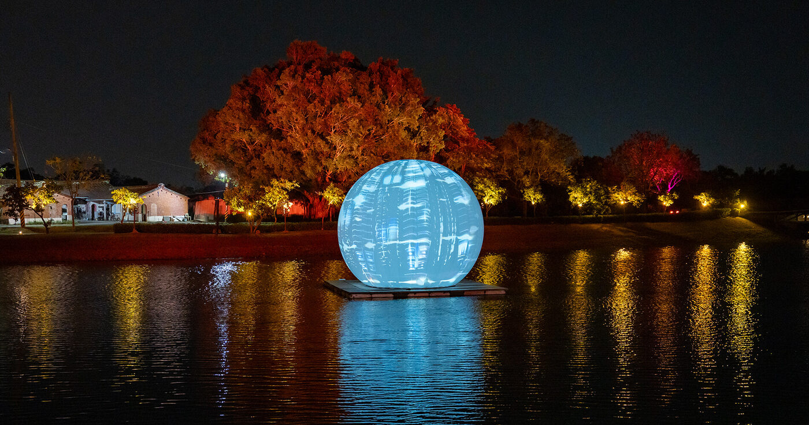
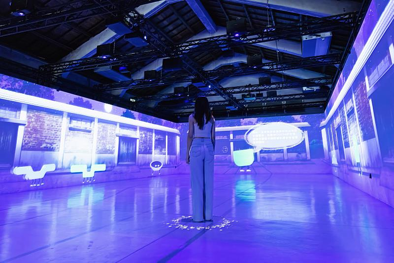
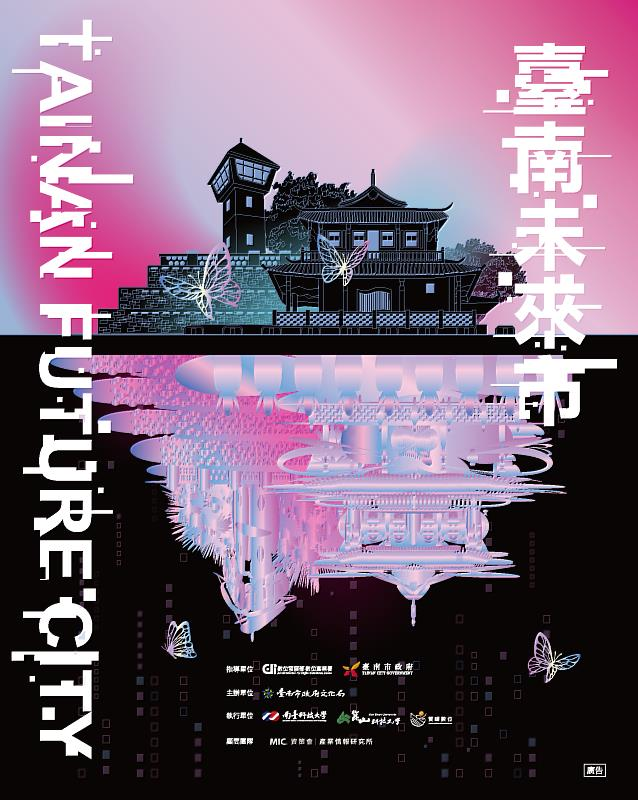
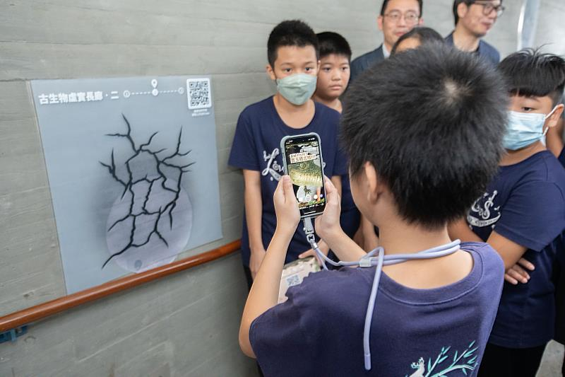
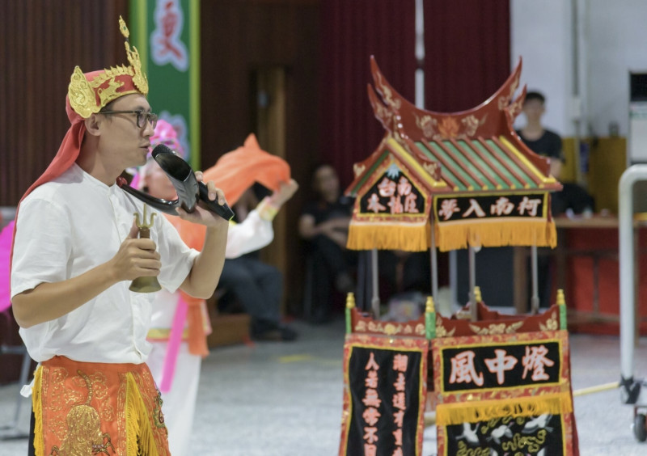
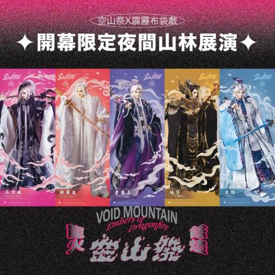
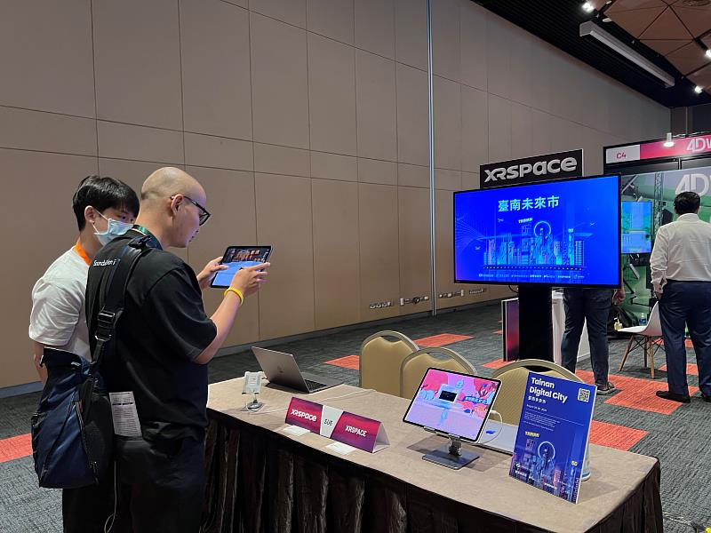
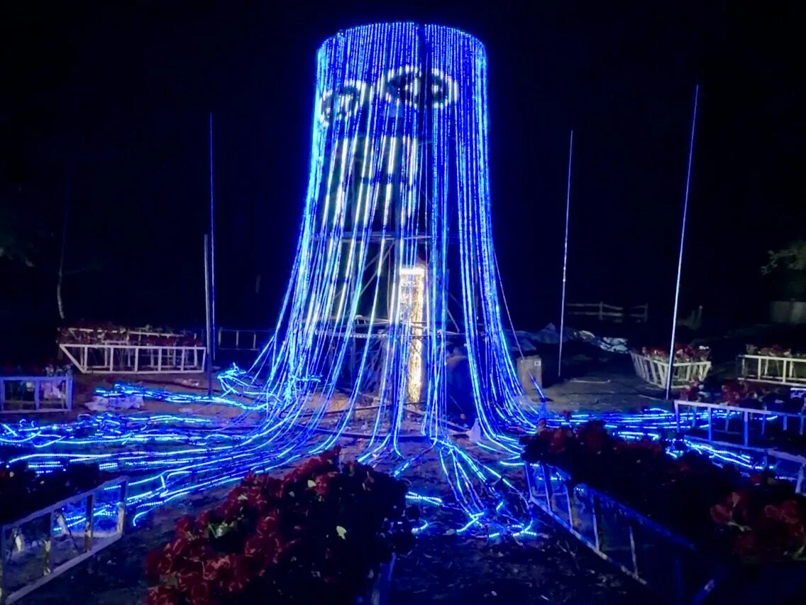
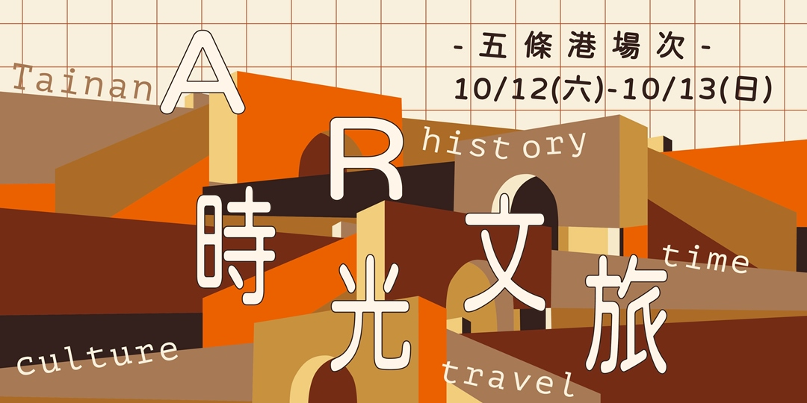
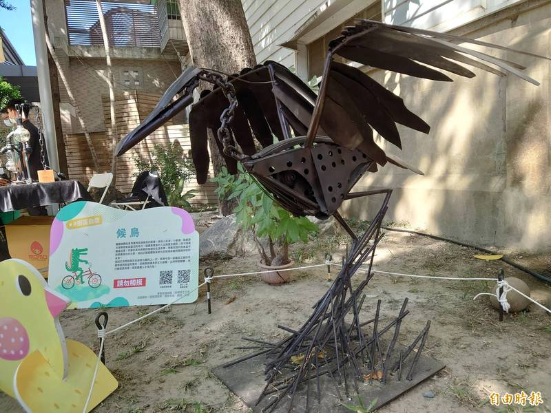
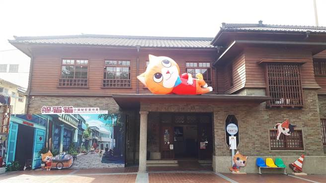
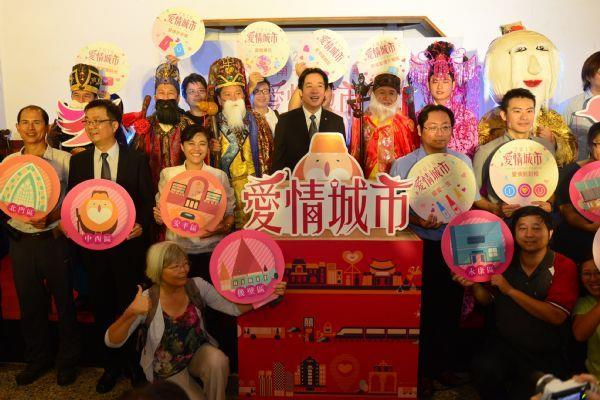
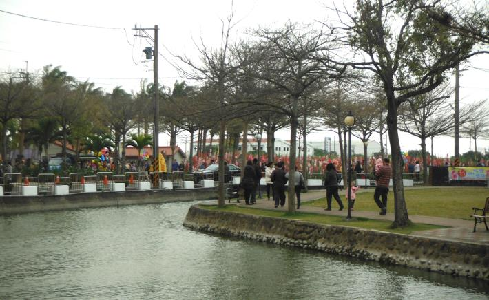
照片版權屬原媒體與主辦單位所有，僅作活動紀錄與報導連結之用。
06 — CAREER
個人經歷
產業研究、科技新創、公部門、藝術經紀、社區大學與學術講堂——每一段經歷，都是跨域整合的養分。
工作經歷
- 資策會人工智慧研究院組長
- 資策會數位轉型研究院南區中心組長
- 資策會產業情報研究所數位產業與新創發展中心組長
- 資暘數位有限公司顧問
- 泛科知識股份有限公司南區營運部 資深經理
- 勞動部勞動力發展署雲嘉南分署南方創客基地營運總監
- 臺南市政府文化局約聘人員
- 湯晨視覺設計有限公司行銷企劃總監
- 全球華人藝術網藝術經紀人
- 新營社區大學行銷暨社區推廣組長
- 錦江堂文教基金會專案經理
講師經歷
- 崑山科技大學 電腦與遊戲發展學程兼任講師
- 台南大學 行政管理系業師
- 南榮科技大學 創新商品設計系兼任講師
- 長榮大學 創新育成中心輔導業師
- 崑山科技大學 視覺傳達設計系兼任業師
- 南瀛養殖協會產業人才投資方案第二期 講師
- 群偉電腦公司觀光導覽人才培訓計畫 講師
- 伽碩企業有限公司 職訓中心課程兼任講師—文化創意產業、導遊領隊實務
07 — IN THE PRESS
媒體報導
中央社、自由時報、中華日報等媒體與政府平台的相關報導。
中央社訊息平台・2025
南大博雅講座談科技與公民參與 揭示 AI 時代不可或缺的數位轉譯力
以「非工程師」背景分享從社區營造到文化行動的公民參與歷程，提出「轉譯者時代」觀點。
自由時報・2021
「職創生活節」看見台灣創意 鋼彈模型很吸睛
活動策展人、南方創客基地總監林士民：帶領大家看見台灣名人的創作故事與創客精神。
中華日報・2026
115 年台南市優秀青年代表獲獎名單公布
林士民名列 115 年臺南市社會優秀青年代表獲獎者。
銘報即時新聞・2016
【2016 兩岸華人金媒獎─得獎感言】林士民：傳播臺南傳統月老文化
「臺南七夕愛情嘉年華」奪得 2016 年兩岸華人金媒創新獎。
台灣好新聞・2021
11 歲小創客技藝超群 南方創客基地打造療癒好生活
南方創客基地行政總監林士民：以「療癒」為概念，吸引彰化、雲林、嘉義、台南、高雄報名者。
臺南市政府青年事務委員會
青年委員 林士民 委員簡介
專長涵蓋產業數位轉型、智慧城市、文化科技應用與轉譯、跨域整合與資源鏈結；並擔任社區營造共識會議桌長。
08 — NETWORK
以文創協會為樞紐，
連結各行各業的達人
透過臺南市文創協會與我們的合作網絡，串聯音樂、藝術、美術等文創產業的專家與職人，與政府、學界、產業一同把好作品帶到更大的舞台。
音
音樂與表演藝術
樂團、DJ、舞者與傳統戲曲團隊，打造沉浸式展演與虛實共演。
藝
藝術經紀與授權
藝術家作品授權、文創商品研發與品牌聯名合作。
美
美術與設計
插畫、視覺設計、裝置藝術與展覽空間規劃。
展
策展與活動
節慶、燈節、特展與市集，從企劃、執行到媒體公關。
科
文化科技
AR、AI、5G、XR 與元宇宙，讓文化資產被重新看見。
轉
數位轉型
產業數位轉型策略、人才培訓與計畫申請輔導。
地
地方創生與社造
社區營造、商圈發展、伴手禮與觀光遊程加值。
青
青年與教育
大學業師、青年公共參與與職涯發展的長期陪伴。
我們正在尋找
下一位志同道合的夥伴。
無論你是音樂人、藝術家、設計師、策展人，或是想用科技為文化找到新出路的實踐者——歡迎加入我們的文創合作網絡。